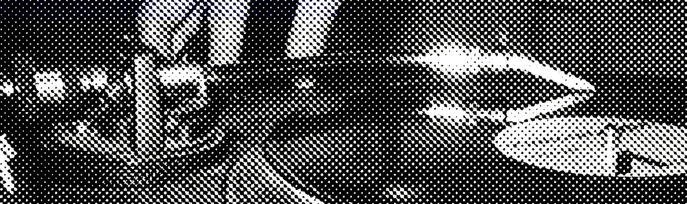
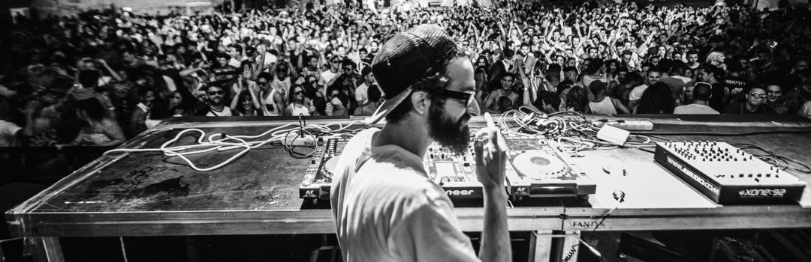
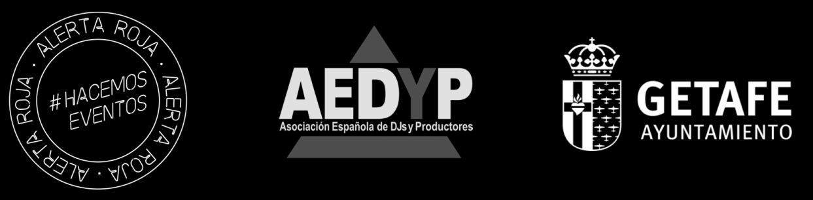

El evento de referencia sobre música electrónica, DJing y producción vuelve al Espacio Mercado de Getafe este Sábado 12 de Diciembre desde las 12 hasta las 21 horas. Charlas y masterclasses durante todo el día a mano de algunos de los personajes con mayor presencia en la escena nacional y madrileña.
Gratuitas y accesibles a todo el mundo, además de retransmitidas en directo para verlas desde cualquier parte.
retransmisión

horario
12:00 -> 12:45 -- La escena electrónica en plena pandemia - debate con miembros de la asamblea regional y concejalías de Getafe y Pinto, y representantes de Alerta Roja eventos, la Asociación Española de DJs y Productores y la Asociación de Trabajadores del Ocio Nocturno
13:00 -> 13:45 -- Charlando sobre Ibiza y el panorama en 2020 - con Anni Frost y Silicodisco
pausa para la comida
16:00 -> 16:45 -- 7 técnicas para terminar temas - masterclass por 7th Pyramid
17:00 -> 17:45 -- Producción de electrónica - masterclass por SLATIN
18:00 -> 18:45 -- Marcos In Dub: Live set - masterclass por Marcos In Dub
19:00 -> 21:00 -- Getafe Room Showcase - actuaciones por residentes de la Escuela de DJs de Getafe
artistas invitados
Anni Frost -- DJ y productora reconocida en la escena electrónica tanto nacional como internacional. Nominada en los Premios Nacionales Vicious Music Awards, ha pinchado en algunos de los clubes más reconocibles de España y Europa, ha publicado temas en el reconocido sello Pornographic Recordings de Cristian Varela, y dirige el programa 120db Sounds de Vicious Radio.
Marcos In Dub -- Un artista versátil que comienza trabajando con hip hop y breaks, y poco a poco va pasándose a texturas y sonidos más contundentes dentro del house, ha publicado trabajos en multitud de sellos de distintos estilos, como Highgrade Records, Darkroom Dubs y Extremly House Music, y ha llevado su música a clubes internacionales junto a artistas como Richie Hawtin, Marco Carola y Laurent Garnier.
SLATIN -- Ruslan Slatin lleva en el panorama desde muy joven, ganando su primer concurso de turntablism con 14 años y comenzando su residencia en Pacha con 21. Sus sets mezclan house y techno con grandes influencias del hip hop, y sus producciones han sido publicadas en sellos de prestigio como Spinnin' Records, Ultra Records y CONFESSION.
colaboradores
En esta edición de Getafe Room colaboran Javier Guardiola, miembro de la Asamblea Regional; Guillermo Portero, concejal de Juventud y Cultura de Pinto; Luis Domínguez, concejal de Cultura y Convivencia de Getafe; Ana Alonso, representante de Alerta Roja eventos; Ismael Rivas, representante de la Asociación Española de DJs y Productores; y Emilio López, representante de la Asociación de Trabajadores del Ocio Nocturno.
Además contamos con la ayuda de Marcos In Dub, Anni Frost, SLATIN y los miembros de la Escuela de DJs de Getafe para aportar el contenido artístico.
Este evento es posible gracias al Ayuntamiento de Getafe.
Cartel por Marta Liébana : Instagram : Behance
Web por @jorgeelalto